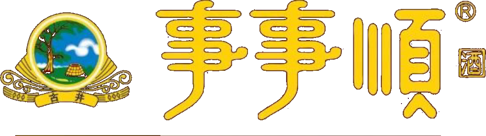
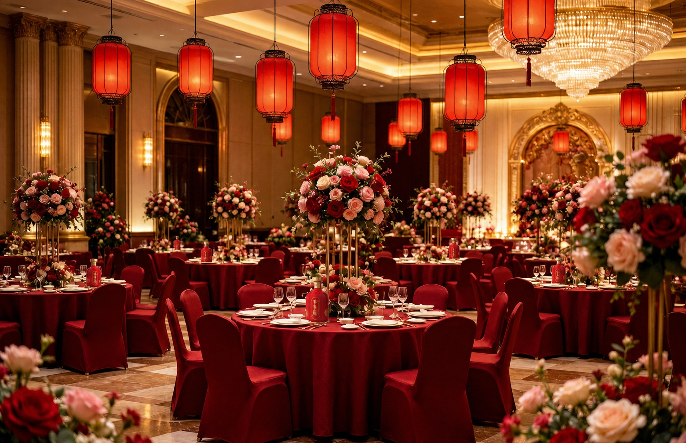

九酝春酒
曹操将家乡亳州所产九酝春酒及酿法进献汉献帝，贡酒文脉由此可寻。

理性饮酒
浏览本网站前，请确认您已年满 18 周岁。


FOUR FLAGSHIPS
顺一年
一年三百六十五天，愿日子有序、心里有光。
浓香型白酒 · 42%vol · 500ml
产品包装、酒精度与净含量以实物及官方渠道信息为准。
BRAND STORY
事事顺生于亳州，也生于中国人对好日子的共同向往。它承接古井贡酒的酿造根脉，也把“顺”带回一张张真实的餐桌。
曹操将家乡亳州所产九酝春酒及酿法进献汉献帝，贡酒文脉由此可寻。
古井贡酒在全国评酒会获评国家名酒，留下“酒中牡丹”的美誉。
古井贡酒酿造技艺列入国家级非物质文化遗产名录。
酒的意义，不止在瓶中，更在亲友围坐、举杯相祝的那一刻。
“文化不必高声说出。它在一杯酒被喜欢、在一句祝愿被记住的时候，自然发生。”
CRAFTSMANSHIP
真正的品质，藏在看不见的耐心里。

甄选粮谷，让各自的香与味在酿造中彼此成全。

一方水土、一座老窖，让时间成为风味的一部分。

尊重经验，也尊重每一道工序应有的分寸。

THE MOMENTS THAT MATTER
敬十年用心，也祝前路开阔。
人到齐，话慢慢说，日子便有了温度。
有家可回，有人可念，就是生活的顺意。
敬一路相扶的人，也敬彼此成全的情谊。
PARTNERSHIP
面向消费者，事事顺讲好一杯酒里的祝愿；面向合作伙伴，我们更看重彼此理解、长期经营与对品牌边界的共同珍视。
品牌合作咨询
安徽省事事顺酒业销售有限公司 安徽省亳州市谯城区药都路1555号